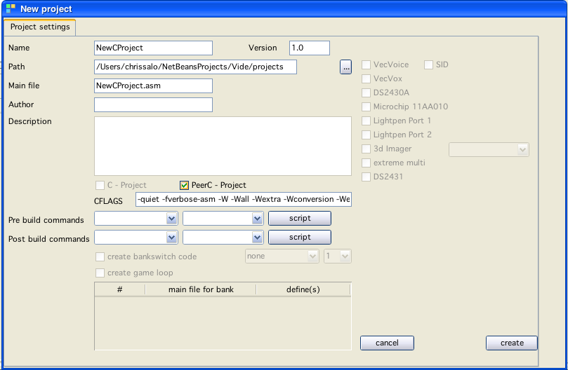
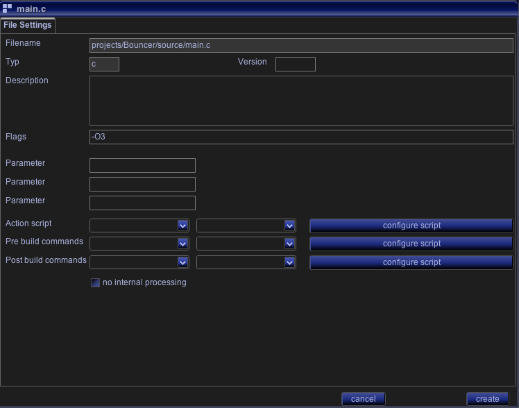

PeerC
As seen in the above image CFLAGS can be set in the project dialog.
I strongly recomend keeping the default values. Nonetheless you can CHANGE them - see also Optimizing C.
You can overwrite the PROJECT settings for each file individually. I don't know how often this makes sense - but you CAN do it.
See below image - there is a "Flags" section for each file - here you can insert gcc compiler flags.
GCC treats flags "further to the right" in the command line prioritized. The flags of each file are "added" to the complete flags string of the project and thus come "further to the right" and as such have higher priority to gcc.
So if you configured -O3 in your project compile settings and -O2 for one file - than for that one file the compile will be done with -O2!

FileProperties